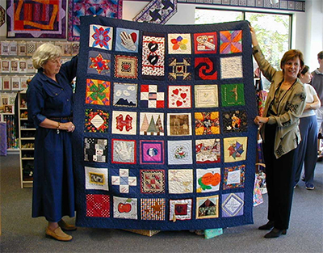
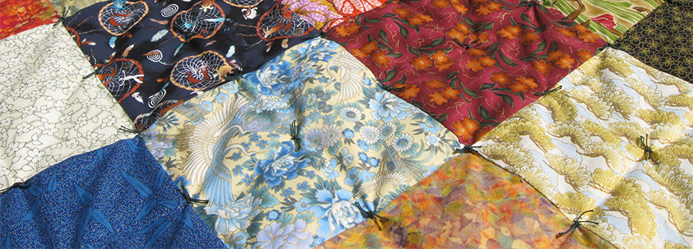

We currently have over 90 active guild members of all experience levels.
Our Guild's History:
Pax River Quilters Guild (PRQG) was formed in 1992 to promote cooperation and the exchange of ideas among quilter and to further the education and skills of our members. We are a 501c 3 non profit organization promoting and engaging in philanthropic activities by making and donating quilts for various organizations such has Quilts of Valor, Project Linus, Hospice of St. Mary's and Charlotte Hall Veterans home to name a few.
Pax River Quilters Guild (PRQG) is a non profit organization to promote cooperation and the exchange of ideas among quilters and to further the education and skills of our members. Membership is open to anyone regardless of race, creed, sex or national origin who is interested in furthering their knowledge of quilting.
Guild Leadership:
President:
Tammy Tilghman (send email)
First Vice President: Joan Shimski
Second Vice President: Pat Merrill
Treasurer: Joann Simms
Secretary: Jean Moulds
Philanthropy Chair: Bridget Jarvis
Publicity: Cindy Miskolczi
Historian: Richard Mervine
Newsletter: Joyce Danaher

We currently have over ninety active guild members of all experience levels New Members Click here
Meeting are held the second Monday of the month, 6:30pm at Good Samaritan Lutheran Church. Get Directions Here